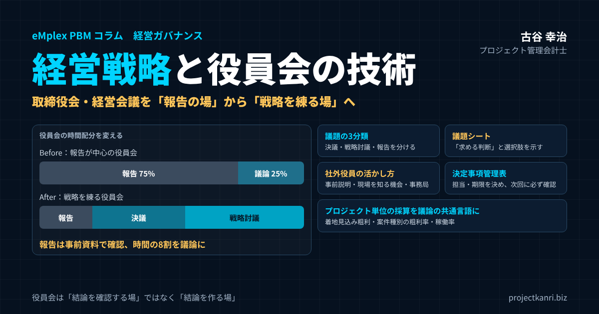

経営戦略と役員会の技術―取締役会・経営会議を「報告の場」から「戦略を練る場」に変えるアジェンダ設計・社外役員の活かし方・決定事項の実行管理

結論：役員会は「結論を確認する場」ではなく「結論を作る場」です
この記事の要点
- 役員会は結論を作る場：報告を承認する場から、経営戦略を練る場へ再設計する
- 議題を3つに分ける：決議・戦略討議・報告。報告は事前資料で済ませ、時間の8割を議論に
- アジェンダと資料：議題シートで「求める判断」と選択肢を示し、3営業日前に配布
- 社外役員と事務局：事前説明・現場を知る機会・能動的な事務局で発言を引き出す
- 実行の仕組み：プロジェクト単位の採算を共通言語に、決定事項を管理表で追う
プロジェクト管理会計士の古谷です。今回は、経営戦略と役員会の関係を取り上げます。
「役員会を開いているのに経営戦略が深まらない」という悩みを抱える経営者は多いものです。毎月、役員が集まり、各部門からの報告を聞き、用意された議案を承認する。会議は予定どおりに終わり、議事録も残る。それなのに、会社の進む方向について、役員の間で腹落ちした議論ができた実感がない。そうした声を、私はこれまで支援してきた多くの会社で耳にしてきました。
多くの人は役員会を「報告を承認する場」だと考えていますが、本来の役員会は、経営戦略を練り上げるための最も重要な装置です。異なる経験と視点を持つ経営陣が、同じ情報をもとに議論し、会社の進む方向を決める。そのための場は、社内に役員会しかありません。
私は、エンプレックスでCFOとして上場準備に携わり、ホリプロでは経営企画として経営会議の運営に関わってきました。独立してからも、200社を超える会社の経営管理を支援する中で、多くの役員会や経営会議に同席してきました。その経験から言えるのは、役員会の設計次第で、戦略の質は大きく変わるということです。
結論から申し上げます。役員会は、結論を確認する場ではなく、結論を作る場です。そのためには、報告と議論を分けること、議題ごとに何を決めるのかを明確にすること、判断の材料となる数字を事前に共有すること、社外役員の視点を引き出すこと、そして決めたことを必ず実行につなげることが必要です。本稿では、これらを一つずつ、具体的な方法とともに解説します。
取締役会・経営会議・役員会の違い：まず会議体の役割を整理する
役員会の運営を考える前に、言葉の整理をしておきます。会社によって「役員会」という言葉が指すものは異なり、法律で定められた取締役会のことを指す場合もあれば、社内で任意に設けた経営会議を指す場合もあります。
| 会議体 | 根拠 | 主な役割 |
|---|---|---|
| 取締役会 | 会社法（取締役会設置会社） | 重要な業務執行の決定、取締役の職務執行の監督、業務執行取締役による3か月に1回以上の職務執行状況の報告、議事録の作成・保存 |
| 経営会議・常務会 | 社内規程（任意） | 日常の重要な業務執行の協議・決定、取締役会議案の事前審議 |
| 役員会（呼び方） | 会社ごとの慣用 | 取締役会や経営会議を指す社内の呼び方。どの会議体を指すかを明確にしておく |
取締役会は、会社法で定められた機関です。取締役会を置く会社では、重要な財産の処分や多額の借財、重要な使用人の選任、内部統制の体制の整備といった重要な業務執行の決定は、取締役会で行わなければなりません。また、代表取締役などの業務を執行する取締役は、三か月に一回以上、職務の執行の状況を取締役会に報告することとされています。議事録の作成と保存も義務づけられています。
一方、経営会議や常務会と呼ばれる会議は、法律で定められたものではなく、会社が任意に設ける会議です。社長と業務を執行する役員などが集まり、日常の業務執行に関する重要な事項を協議します。取締役会の前に議案を事前に審議する場として位置づけている会社も多くあります。
この記事で「役員会」と呼ぶのは、この両方を含めた、経営陣が集まって会社の方向を議論し、決める場のことです。大切なのは、それぞれの会議体が何を議論し、何を決める場なのかを、社内で明確にしておくことです。取締役会と経営会議で同じ報告を繰り返し、どちらの会議でも戦略の議論が深まらない、という会社は珍しくありません。
私がお勧めしているのは、会議体ごとに付議する基準を定めた付議基準表を作ることです。どの金額以上の投資は取締役会の決議事項か、どの事項は経営会議で決めてよいか、何を報告事項とするか。この基準が明確になっていれば、議題の振り分けに迷うことがなくなり、それぞれの会議体で議論すべきことに時間を使えるようになります。
付議基準表は、一度作って終わりではありません。会社の規模が大きくなれば、取締役会で扱うべき金額の基準も変わります。年に一度は付議基準を見直し、取締役会が細かな案件の承認に追われていないか、逆に重要な判断が経営会議だけで決められていないかを確認してください。
役員会は「報告の場」ではなく「戦略を練る場」
多くの企業で、役員会は各部門からの報告を聞き、あらかじめ用意された議案を承認するだけの場になりがちです。しかし本来の役員会の価値は、経営陣が持つ異なる視点をぶつけ合い、戦略の精度を上げることにあります。報告だけで終わる役員会は、形式的なガバナンスに過ぎず、企業の意思決定の質を高めることにはつながりません。
なぜ役員会は報告の場になってしまうのでしょうか。私が見てきた中では、主に四つの原因があります。
| 原因 | 起きていること | 対策 |
|---|---|---|
| 報告の量が多すぎる | 各部門の数字の説明で時間が終わる | 報告は事前資料で確認のみ |
| 議題の目的が不明確 | 何を決める議題か分からない | 議題シートで「求める判断」を明示 |
| 材料が当日に出てくる | 理解だけで精一杯、前提を疑えない | 3営業日前までに資料を配布 |
| 議論しにくい空気 | トップの結論に皆が従う | トップは最後に発言、反論を歓迎 |
一つ目は、報告の量が多すぎることです。各部門が月次の数字を一つひとつ説明していくと、それだけで会議の時間の大半が終わります。二つ目は、議題の目的が不明確なことです。「〇〇について」という議題名だけでは、その議題で何を決めるのかが分かりません。目的が分からない議題では、出席者は意見の言いようがありません。
三つ目は、議論の材料が当日に出てくることです。会議の場で初めて資料を見ても、内容を理解するだけで精一杯で、前提を疑ったり、別の選択肢を考えたりする余裕はありません。四つ目は、議論しにくい空気です。社長が最初に結論を述べてしまう、反対意見を述べると角が立つ、といった空気の中では、役員は黙って承認するしかありません。
これらの原因は、いずれも役員会の設計の問題です。役員の能力や意欲の問題ではありません。だからこそ、設計を変えれば、役員会は変わります。戦略を議論する場として役員会を再設計することが、経営の実効性を高める第一歩です。
役員会が報告の場になっているかどうかは、議事録を見ればすぐに分かります。直近の一年分の議事録を並べて、報告事項と決議事項、そして戦略についての議論の記録が、それぞれどれだけあるかを数えてみてください。戦略の議論の記録がほとんど見当たらないなら、その役員会は、経営戦略を練る場としては機能していないということです。現状を数字で把握することが、改革の出発点になります。
コーポレートガバナンス・コードが求める取締役会の役割
上場会社の取締役会のあり方については、東京証券取引所のコーポレートガバナンス・コードが原則を示しています。コードは2026年7月に改訂され、従来の補充原則が廃止されて、基本原則、原則、解釈指針の三層の構成に整理されました。
改訂後のコードでも、取締役会が会社の戦略的な方向付けを行うことは、取締役会の主要な役割と位置づけられています。加えて、成長投資などの経営資源の配分について、具体的に何を実行するのかを説明すること、そしてその配分が適切かどうかを取締役会が検証し続けることが求められるようになりました。取締役会が自由闊達で建設的な議論を尊ぶ気風を醸成すること、取締役が必要な情報を入手できる体制を整えること、取締役会の事務局が能動的に運営を支えることも、改訂のポイントです。
改訂前のコードの補充原則では、取締役会の資料を会日に十分に先立って配布すること、年間の開催スケジュールや予想される審議事項を決めておくこと、審議の項目数や開催の頻度を適切に設定し、審議の時間を十分に確保することなどが例示されていました。これらは、改訂後もそのまま役員会の運営の基本になる考え方です。
コードは上場会社に向けたものですが、その考え方は未上場の会社にもそのまま役に立ちます。取締役会や経営会議を、報告を聞く場ではなく、戦略の方向を決め、経営資源の配分を議論する場にする。この記事でお伝えする技術は、その実践の方法だと考えてください。なお、コードの詳しい内容は、東京証券取引所が公表しているコードの本文で確認されることをお勧めします。
戦略議題と報告議題を分離する
役員会の質を落とす最大の原因は、戦略的な議題と定例の報告が、同じ会議の中で混在していることです。数字の説明に時間を取られ、本当に議論すべき中長期の戦略テーマに割く時間が残らない、という状態は非常によくあります。
そこでお勧めしているのが、役員会の議題を三つの種類に分けることです。
| 区分 | 内容の例 | 当日の扱い | 時間配分 |
|---|---|---|---|
| 決議事項 | 法令・定款・付議基準で定める事項、重要な投資・契約 | 論点を絞って判断 | 合わせて8割以上 |
| 戦略討議事項 | 事業ポートフォリオ、価格方針、人材、投資の方向性 | 複数回で議論を深める | 合わせて8割以上 |
| 報告事項 | 月次業績、部門の活動、リスクの状況 | 事前資料で確認、質疑のみ | 2割以下 |
一つ目は、決議事項です。会社として正式に決める必要がある事項で、取締役会であれば法令や定款、付議基準で決められた事項がこれにあたります。決議事項は、事前に論点を整理し、当日は判断に集中します。
二つ目は、戦略討議事項です。すぐに結論を出す必要はないものの、会社の方向に関わる重要なテーマについて、経営陣で議論を重ねる議題です。事業の選択と集中、価格の方針、人材の採用と育成、新しいサービスへの投資などが該当します。戦略討議は、一回の会議で結論を出すのではなく、数回に分けて議論を深め、最終的に決議事項として決めることもあります。
三つ目は、報告事項です。月次の業績、各部門の活動、リスクの状況などです。報告事項は、事前に資料で共有し、当日は確認と質疑のみにとどめます。資料を読めば分かることを、会議の場で読み上げる必要はありません。
時間の配分の目安としては、会議の時間のうち、報告事項は二割以下、決議事項と戦略討議事項に八割以上を充てることをお勧めしています。二時間の会議であれば、報告の確認は二十分ほどで終え、残りの時間を議論に使うイメージです。この運営の切り替えだけで、議論の密度は大きく変わります。
報告を短くするためには、報告の様式を統一することも効果があります。月次の業績であれば、予算と実績と着地見込み、前回からの変化、その原因、打ち手を、決まった形で一枚にまとめる。様式がそろっていれば、読み手は短い時間で要点をつかめますし、報告する側も、何を書けばよいかに迷いません。
開催頻度・時間・出席者をどう決めるか
役員会の設計では、開催の頻度、時間、出席者も大切な要素です。
開催の頻度は、取締役会であれば月に一回が一般的です。会社法では、業務を執行する取締役が三か月に一回以上、職務の執行の状況を報告することとされていますが、経営の状況を適時に把握し、必要な判断を遅らせないためには、月次での開催をお勧めします。経営会議は、会社の規模や意思決定の速度に応じて、週に一回から月に二回程度で開いている会社が多いようです。
会議の時間は、議題の数と内容から逆算して決めます。毎回同じ時間に設定しておき、議題がそれを超える場合は、優先順位の低い議題を次回に回します。会議の時間を延ばして対応するのではなく、議題を絞ることが、議論の質を保つうえで大切です。戦略のテーマを集中的に議論したい場合は、通常の会議とは別に、半日から一日をかけた合宿形式の戦略会議を年に一、二回設けるのも有効です。
出席者は、決議に必要な人と、議論に必要な人を分けて考えます。議題に関係する部門の責任者を、その議題の時間だけ出席してもらう形にすれば、全員が最初から最後まで座っている必要はありません。出席者が多すぎる会議は、一人あたりの発言の機会が減り、議論が浅くなります。
オンラインやハイブリッドで開催する場合は、会議室にいる人だけで議論が進み、画面の向こうの出席者が発言しにくくなることに注意が必要です。議長が意識してオンラインの出席者に発言を求める、資料を画面で共有しながら論点を示す、といった運営を心がけてください。
アジェンダ設計が役員会の質を決める
良い役員会は、良いアジェンダから生まれます。単に議題名を並べるだけでなく、その議題で何を決めたいのか、どんな判断を役員に求めているのかを、事前に明確にしておく必要があります。
私がお勧めしているのは、議題ごとに一枚の議題シートを用意することです。
| 項目 | 記載する内容 |
|---|---|
| 議題名 | 何についての議題か |
| 区分 | 決議・戦略討議・報告のいずれか |
| 求める判断 | 承認か、選択か、方向性への意見か |
| 背景と論点 | なぜ今この議題か、何が争点か |
| 選択肢 | 2つ以上の案（何もしない案を含む）と、それぞれのメリット・リスク |
| 判断材料 | 数字・プロジェクトの実績データ・着地見込み |
| 提案と理由 | 提案する案とその根拠 |
| 決定後の実行 | 担当役員、期限、次回報告の内容 |
議題シートで最も大切なのは、「求める判断」の欄です。「承認してほしい」のか、「AとBのどちらを選ぶか決めてほしい」のか、「方向性について意見がほしい」のか。求める判断が明確になっていれば、出席者は何について考えればよいかが分かり、議論が拡散しません。
次に大切なのが、「選択肢」の欄です。一つの案だけを示して承認を求めると、出席者は賛成か反対かしか選べません。少なくとも二つ以上の選択肢を示し、それぞれのメリットとリスクを並べることで、議論は具体的になります。何もしないという選択肢を加えておくのも有効です。
そして、年間のアジェンダを決めておくことも重要です。役員会で議論すべき戦略テーマは、年間を通じて計画的に配置しておかなければ、目の前の報告や緊急の案件に押し流されてしまいます。
| 時期 | 主な戦略討議・決議テーマ |
|---|---|
| 4〜6月 | 前期の振り返り（プロジェクト別採算の分析）、今期重点施策の確認、役員体制 |
| 7〜9月 | 中期経営計画の進捗、事業・案件ポートフォリオの見直し、人材計画 |
| 10〜12月 | 上期の着地と下期の打ち手、投資・資源配分の方針、価格方針 |
| 1〜3月 | 次期予算の方針と策定、組織体制、取締役会の実効性の振り返り |
年間のアジェンダは、決算や予算の策定といった年間の業務の流れに合わせて組み立てます。たとえば、期初には前期の振り返りと今期の重点施策の確認、期中には中期経営計画の進捗や事業ポートフォリオの見直し、期末に向けては次期の予算の方針と策定、というように配置します。判断の軸となる数字やプロジェクトの実績データを事前に配布しておけば、当日は前提の説明ではなく、議論そのものに時間を使えます。アジェンダの設計力は、そのまま経営戦略の実行速度に直結します。
議題の順番にも工夫の余地があります。会議の冒頭は、出席者の集中力が最も高い時間です。この時間に最も重要な戦略討議事項を置き、報告事項は最後に回すことをお勧めします。報告から始めると、報告の質疑が長引き、肝心の議論の時間が削られることになりがちです。ただし、前回の決定事項の進捗の確認だけは、冒頭で短く行うようにしてください。
議論を生む資料の作り方と事前配布
アジェンダと並んで役員会の質を左右するのが、資料です。役員会の資料は、説明のための資料ではなく、判断のための資料でなければなりません。
判断のための資料の基本は、最初の一枚に論点と結論の案を書くことです。背景の説明から始めて、最後のページで結論を示す資料は、読み手に最後まで読ませないと、何を判断すればよいかが分かりません。最初の一枚に、何を決めてほしいのか、提案する案は何か、その理由は何か、主なリスクは何かをまとめ、詳しい分析は後ろのページに回します。
数字の示し方にも工夫が必要です。単月の数字だけでなく、予算との差、前年との差、そして期末の着地見込みを並べて示します。役員会で議論すべきは、過去の結果よりも、これからどこに着地しそうか、そのために何をすべきかです。着地見込みが示されていない資料では、議論は過去の評価に終始してしまいます。
資料は、会議の三営業日前までに配布することを目安にしてください。前日の夜に配布された資料では、出席者は十分に読み込むことができません。特に社外役員は、社内の事情に詳しくない分、資料を読み込む時間が必要です。資料の配布が遅れがちな会社では、資料の締め切りを会議の日程と一緒に年間で決めておき、締め切りを過ぎた議題は次回に回すというルールを設けることも有効です。
資料の量にも注意が必要です。毎回数十ページを超える資料を配布している会社がありますが、量が多すぎる資料は、かえって読まれません。議題ごとに要点を数ページにまとめ、詳しいデータは参考資料として別にする。読み手の時間を大切にすることが、議論の質を高める近道です。
資料を作る側の負担にも目を向けてください。役員会のたびに、各部門が数日をかけて資料を作っている会社は少なくありません。資料の作成に追われて、本来の業務や、数字の背景にある原因の分析に時間を使えないのでは本末転倒です。毎月の業績の資料は、仕組みで自動的に作られる形にし、人の手は、論点の整理と提案の検討に使う。これが、資料の質を高めながら、作る側の負担を減らす方法です。
議論の進め方：沈黙を「合意」と取り違えない
アジェンダと資料が整っても、当日の議論の進め方が悪ければ、役員会は活性化しません。議論を生むための進め方の工夫をいくつかご紹介します。
一つ目は、経営トップが最初に発言しないことです。社長が最初に意見を述べると、他の役員はそれに反する意見を言いにくくなります。社長はまず聞き役に回り、他の役員、特に社外役員から意見を引き出してから、最後に自分の考えを述べる。この順序を変えるだけで、議論の幅は大きく広がります。
二つ目は、議長の役割を明確にすることです。議長は、議題の目的を最初に確認し、議論が論点から外れたら引き戻し、発言していない出席者に意見を求め、最後に何が決まったのかを確認します。議長が社長を兼ねる場合でも、議事の進行と自分の意見の表明は分けて考える必要があります。
三つ目は、前提を疑う質問を歓迎することです。役員会で投げかけるべき質問の例を挙げておきます。
| 観点 | 質問の例 |
|---|---|
| 前提 | この計画は、どの前提が崩れると成り立たなくなるか |
| 選択肢 | 他にどんな案を検討し、なぜ退けたのか |
| 数字 | この案件・事業の着地見込みの粗利はいくらか、根拠は何か |
| リスク | 最悪の場合、いくら失い、どう撤退するのか |
| 資源 | この施策に人と資金を振り向けると、何をやめることになるか |
| 実行 | 誰が、いつまでに、何をもって成功とするのか |
四つ目は、沈黙を合意と取り違えないことです。誰も反対しなかったからといって、全員が納得しているとは限りません。重要な決議の前には、議長が一人ひとりに意見を求める、懸念があれば必ず述べてもらう、といった運営が大切です。議論を生む役員会の技術については、別のコラムでも詳しく取り上げていますので、あわせてご覧ください。
五つ目は、結論が出ない議題を、無理に一回で決めないことです。議論の結果、判断に必要な情報が足りないことが分かったなら、追加で調べるべきことを明確にし、次回の議題として改めて議論します。役員会で大切なのは、その場で結論を出すことではなく、良い結論にたどり着くことです。
議論の土台は経営陣の信頼関係：対立を「意見」の対立にとどめる
役員会で本音の議論を生むためには、技術だけでなく、経営陣の間の信頼関係が欠かせません。反対意見を述べても、人間関係が壊れない。意見の対立が、個人の対立にならない。そうした信頼があって初めて、役員は率直に意見を述べることができます。
信頼関係をつくるうえで大切なのは、意見と人格を切り離すことです。ある役員の提案に反対することは、その役員を否定することではありません。議長や経営トップが、反対意見を述べた役員に感謝を示す、議論の後に結論が出たら全員でその結論を支える、という姿勢を示すことで、率直な議論の文化が少しずつ育っていきます。
もう一つは、それぞれの役員の役割を明確にすることです。自分の担当の部門の利益だけを代弁する役員ばかりでは、全社の視点からの議論はできません。役員会では、全員が会社全体の経営者として発言するという約束を、改めて確認しておくことをお勧めします。担当の部門にとって不利な結論であっても、全社にとって正しい判断であれば受け入れる。その覚悟が、役員会を戦略を練る場にする前提条件です。
私がこれまで見てきた中で、役員会の議論が活発な会社は、決まってこの信頼関係ができている会社でした。逆に、表面上は穏やかに会議が進んでいても、本音は会議の後の廊下や個別の席で語られる会社では、役員会で決まったことが実行されないことが多いのです。
社外役員を「お飾り」にしない運営
社外取締役や社外監査役を形式的に置くだけで、実質的な発言を引き出せていない企業は少なくありません。社内の力学から距離のある社外役員こそ、戦略の前提を疑う質問を投げかけられる存在です。社外役員の発言を引き出すことは、社外役員本人の努力だけでなく、経営陣の仕事でもあります。
| タイミング | 取り組み |
|---|---|
| 会議前 | 重要議題の論点を個別に事前説明し、疑問点を把握する |
| 日常 | 事業所・プロジェクトの現場訪問、現場責任者との対話の機会 |
| 会議中 | 議長が社外役員に意見を求める、指摘に担当役員が誠実に回答する |
| 会議後 | 指摘を受けて何をしたかを次回に報告する |
| 選任時 | 会社の戦略に照らして必要な経験・知見を持つ人を選ぶ |
まず、事前の説明です。重要な議題については、会議の前に、担当の役員や事務局が社外役員に個別に論点を説明しておきます。事前に疑問点を聞いておけば、当日は理解のための質問ではなく、判断のための議論に時間を使えます。事前の説明は、根回しとは違います。結論への賛成を取り付けるためではなく、議論の前提をそろえるために行うものです。
次に、現場を知る機会をつくることです。社外役員は、社内の事業や現場の実態に触れる機会が限られています。主要な事業所やプロジェクトの現場を訪問する、現場の責任者と話す機会を設ける、といった取り組みは、社外役員の発言の具体性を高めます。
そして、当日に発言しやすい空気をつくることです。議長が社外役員に意見を求める、社外役員の指摘に対して担当の役員が誠実に回答する、指摘を受けて何をしたかを次回の会議で報告する。こうした積み重ねが、社外役員にとって「意見を言えば会社が変わる」という実感につながります。
私がエンプレックスでCFOとして上場準備に携わっていた際も、社外役員との事前のすり合わせが、議論の質を大きく左右すると実感しました。社外の視点からの質問は、社内の人間が当たり前だと思っていた前提を問い直すきっかけになります。そうした質問を、会議の場で歓迎する雰囲気をつくることが、経営陣の大切な役割です。
社外役員を選ぶ段階でも、会社の戦略に照らして、どのような経験や知見を持つ人が必要かを考えることが大切です。財務や法務の専門家だけでなく、自社が今後進もうとする事業の領域に知見のある人を迎えることで、戦略の議論はより実質的なものになります。
社外役員には、会社の数字を自ら確認できる環境を用意しておくことも大切です。会議の資料だけでなく、プロジェクト別の採算や着地見込みを、必要なときに確認できる。改訂後のコーポレートガバナンス・コードが、取締役が能動的に情報を入手することや、そのための支援の体制を求めているのも、こうした情報へのアクセスを意識したものと言えるでしょう。
役員会事務局の役割：議論を支える「裏方」を強化する
役員会の質を支えるもう一つの存在が、事務局です。2026年に改訂されたコーポレートガバナンス・コードでも、取締役会の事務局が、単なる事務方としての役割にとどまらず、会議が実効性ある議論の場となるよう、能動的に運営を担うことが望ましいとされています。
事務局の役割は、議題の取りまとめ、資料の締め切りの管理と配布、社外役員への事前説明の調整、議事録の作成、決定事項の進捗の管理など、多岐にわたります。特に、議題を出す部門に対して、議題シートの作成を求め、求める判断や選択肢が明確になっているかを確認することは、事務局の大切な仕事です。
多くの会社では、事務局は総務部門や経営企画部門が担っています。私のおすすめは、経営企画やFP&Aの機能を持つ部門が事務局を担うことです。数字を理解し、経営の論点を整理できる人が事務局にいることで、議題や資料の質が大きく上がります。事務局は、役員会の議論の質を左右する、重要なポジションだと考えてください。
CFO・管理担当役員の役割：役員会の「数字の番人」になる
役員会を戦略を練る場にするうえで、CFOや管理部門を担当する役員の役割は大きなものがあります。私自身、CFOとして役員会に臨んでいた経験から、CFOには三つの役割があると考えています。
一つ目は、議論の前提となる数字を、正確に、速くそろえることです。役員会の議論は、数字の正しさを疑う議論から始まっては前に進みません。月次の決算を早く締め、予算と実績と着地見込みを、決まった形で毎回示すことが、CFOの最も基本的な仕事です。
二つ目は、提案された案の数字を、中立の立場で検証することです。事業を担当する役員が投資や新しい事業を提案するとき、その計画の前提が楽観的すぎないか、リスクが織り込まれているかを確認するのは、CFOの役割です。提案に反対するためではなく、議論の質を高めるための検証です。
三つ目は、経営資源の配分の議論を主導することです。限られた資金と人材を、どの事業、どの施策に振り向けるのか。全社の数字を見渡せるCFOだからこそ、全体最適の視点から論点を提示できます。改訂後のコーポレートガバナンス・コードが資源配分の説明と検証を求めていることからも、この役割の重要性はますます高まっていると言えるでしょう。
プロジェクト型ビジネスの戦略議論に必要な情報
プロジェクト型ビジネスにおける経営戦略の議論では、全社の売上や利益だけでなく、プロジェクト単位の採算の状況が見えていることが前提になります。どのプロジェクトが儲かっていて、どこにリスクが集中しているかが見えなければ、役員会での戦略の議論は、感覚的な意見の応酬に終わってしまいます。
プロジェクト型ビジネスの役員会に、毎回そろえておきたい情報を整理しておきます。
| 情報 | 見るべきポイント |
|---|---|
| 全社の予算・実績・着地見込み | 期末にどこに着地しそうか、予算との差 |
| 受注残・受注見込み | 来期以降の売上の見通し |
| プロジェクト別の着地見込み粗利 | 赤字・赤字懸念案件の件数と金額、原因 |
| 案件種別・顧客別・部門別の粗利率 | 儲かる構造と儲からない構造 |
| 顧客の集中度 | 特定顧客への依存のリスク |
| 人材の稼働率 | 受注余力、採用・外注の必要性 |
全社の売上が予算どおりでも、その内訳を見ると、一部の大型のプロジェクトの好調が、多くのプロジェクトの不調を覆い隠していることがあります。また、受注残が減っていれば、今期の数字が良くても、来期の売上に不安があることになります。役員会で議論すべきは、こうした数字の裏にある構造です。
たとえば、案件の種類別の粗利率を並べてみると、売上の伸びている種類の粗利率が低下していることが分かるかもしれません。それは、価格の方針を見直すべきなのか、作業の進め方を見直すべきなのか、あるいはその種類の案件から撤退すべきなのか、という戦略の議論につながります。顧客別の売上の集中度が高まっていれば、特定の顧客への依存のリスクをどう考えるかという議論になります。
人材の稼働率も、プロジェクト型ビジネスでは重要な経営情報です。稼働率が高止まりしていれば、受注を増やしても対応できる人がいないということであり、採用や外注の方針を議論する必要があります。逆に稼働率が低ければ、営業の強化や、人材の配置の見直しが論点になります。
予算・実績・見通しを、プロジェクト単位で示せる仕組みは、戦略の議論の土台そのものだと私は考えています。役員会の資料を作るたびに、各部門から数字を集め、エクセルで集計し直している会社では、数字がそろうまでに時間がかかり、議論は過去の振り返りに終わりがちです。
大切なのは、これらの数字を、毎回同じ形で示すことです。資料の形が毎回変わると、出席者は前回との違いを読み取ることができません。同じ形のレポートを継続して示すことで、数字の変化そのものが議論のきっかけになります。
プロジェクト型ビジネスで役員会が議論すべき戦略テーマ
では、プロジェクト型ビジネスの役員会では、どのような戦略テーマを議論すべきでしょうか。私が支援先でよく取り上げるテーマを挙げておきます。
| テーマ | 議論の例 | 判断に使う数字 |
|---|---|---|
| ポートフォリオ | どの案件種別・顧客層に集中するか | 案件種別・顧客別の粗利率 |
| 価格と受注 | 値引き受注を許すか、粗利率の基準をどう置くか | 受注時の予定粗利率と着地粗利率 |
| 人材キャパシティ | 採用・育成・外部パートナーの活用 | 稼働率、受注残、職種別の工数 |
| 投資と資源配分 | 新サービス・システム・M&Aへの配分 | 事業別収支、投資回収の見込み |
一つ目は、事業や案件のポートフォリオです。どの種類の案件に経営資源を集中させるのか、どの顧客層を狙うのか。プロジェクトごとの採算のデータをもとに、儲かる案件と儲からない案件の構造を議論します。
二つ目は、価格と受注の方針です。値引きをしてでも受注を優先するのか、粗利率の基準を守るのか。受注の判断の基準を役員会で明確にしておけば、現場の営業は迷わずに判断できます。
三つ目は、人材のキャパシティです。プロジェクト型ビジネスでは、売上の上限は人材の数と能力で決まります。どの職種を何人採用し、どう育成するか、外部のパートナーをどう活用するかは、事業の成長の速度を左右する戦略テーマです。
四つ目は、投資の方針です。新しいサービスの開発、システムへの投資、M&Aなど、将来の成長のための投資について、どの程度の資金を、どの領域に配分するのかを議論します。改訂後のコーポレートガバナンス・コードが経営資源の配分の説明と検証を求めているのも、まさにこの議論のことです。
これらのテーマは、一度の会議で結論が出るものではありません。年間のアジェンダの中に戦略討議事項として計画的に配置し、データをもとに議論を重ねることで、経営陣の間に共通の認識が生まれ、戦略の解像度が上がっていきます。
戦略討議の進め方の例：ある案件種別の粗利率の低下をどう議論するか
戦略討議を具体的にイメージしていただくために、架空の例で議論の進め方を示します。システム開発とWeb制作を手がける会社で、売上の伸びているWeb制作の案件の粗利率が、この一年で下がり続けているとします。
一回目の役員会では、事実の確認と論点の整理を行います。事務局が、案件の種類別の粗利率の推移、Web制作の案件の規模別・顧客別の採算、工数の内訳を資料として事前に配布します。当日は、粗利率の低下が一部の大型案件によるものなのか、案件全体の傾向なのか、見積の段階で低いのか、実行の段階で下がっているのかを確認します。この段階では結論を出さず、次回までに調べるべきことを決めます。
二回目の役員会では、原因の分析と選択肢の議論を行います。たとえば、修正の回数が増えて工数が膨らんでいること、小規模の案件ほど採算が悪いことが分かったとします。担当の役員が、価格を改定する案、小規模案件の受注の基準を設ける案、制作の進め方を標準化する案、現状を維持する案の四つの選択肢を、それぞれの粗利への影響の試算とともに示します。社外役員からは、他社の事例や、顧客の側から見た影響について意見が出るかもしれません。
三回目の役員会で、決議事項として方針を決めます。たとえば、制作の進め方を標準化したうえで、一定の規模未満の案件については価格を改定する、という方針を決め、担当の役員と期限を決定事項の管理表に記載します。その後の役員会では、管理表にもとづいて実行の状況と、粗利率の変化を確認していきます。
このように、一つの戦略テーマを数回の会議に分けて議論することで、思いつきや印象ではなく、データにもとづいた判断ができるようになります。そして、議論の過程を経営陣が共有していることで、決まった方針を現場に伝えるときにも、全員が同じ言葉で説明できるようになります。
決定事項を実行につなげる仕組み
役員会で優れた戦略が議論されても、決定事項が現場に落ちていかなければ意味がありません。200社を超える企業を支援してきた中で、戦略が実行されない企業の多くには、決定した内容のフォローアップの仕組みが存在しないという共通点がありました。
決定事項を実行につなげるために、私がお勧めしているのが、決定事項の管理表です。
| No. | 決定事項 | 担当役員 | 期限 | 次回報告 | 状況 |
|---|---|---|---|---|---|
| 1 | 粗利率15％未満の案件の受注は役員承認制とする | （営業担当役員） | 翌月末 | 規程改定案 | 対応中 |
| 2 | 赤字懸念案件3件の是正策を策定する | （事業担当役員） | 2週間後 | 是正策と着地見込み | 完了 |
| 3 | 来期の採用計画を職種別に作成する | （管理担当役員） | 翌々月 | 採用計画案 | 未着手 |
担当役員は部門名ではなく個人名で記載します。内容は説明のための例です。
管理表には、決定した内容、担当の役員、期限、次回に報告すべきこと、そして進捗の状況を記載します。担当者は、部門の名前ではなく、責任を持つ個人の名前にしてください。「営業部で検討する」では、誰が動くのかが分かりません。
そして、次回の役員会の冒頭で、必ずこの管理表を確認します。期限が来た決定事項について、何が実行され、どのような結果が出たのかを、担当の役員が報告します。実行されていない場合は、その理由と、新しい期限を確認します。決めたことが実行されているかを確認する習慣がなければ、役員会で何を決めても、現場は「また言っているだけだ」と受け止めるようになります。
決定事項を現場に伝える方法も大切です。役員会で決めた方針を、担当の役員が自分の部門に持ち帰り、具体的な行動計画に落とし込む。その際、なぜその方針に決まったのか、どのような議論があったのかを伝えることで、現場の納得感が高まります。結論だけが伝わる方針は、現場で形だけ守られ、本来の意図が生かされないことがよくあります。
決定事項の管理表は、役員会の事務局が管理し、会議の資料と一緒に毎回配布します。期限を過ぎた事項が増えている場合は、決定事項が多すぎるのか、担当の役員の負荷が偏っているのかを確認し、優先順位を見直すことも必要です。決めることの数を絞ることも、実行力を高める一つの方法です。
議事録は「記録」ではなく「経営の資産」
取締役会の議事録は、会社法で作成と保存が義務づけられています。しかし、議事録を法令上の義務を果たすための記録としか捉えていない会社では、議事録は「承認された」「報告があった」という形式的な記載にとどまりがちです。
議事録には、決定した内容だけでなく、どのような論点があり、どのような意見が出て、何を根拠に判断したのかを記録しておくことをお勧めします。後から判断を振り返るときに、当時どのような情報をもとに、何を考えて決めたのかが分かることは、経営の学習にとって大きな価値があります。
また、取締役の責任の観点からも、議事録は重要です。経営の判断が結果的にうまくいかなかった場合でも、十分な情報をもとに、合理的な議論を経て判断したことが記録に残っていれば、取締役が適切に職務を果たしたことを示す材料になります。議論の過程を残すことは、経営陣を守ることにもつながるのです。
議事録は、会議の後なるべく早く作成し、出席者の確認を得ることが大切です。会議から時間がたつほど、議論の内容の記憶はあいまいになり、正確な記録を残すことが難しくなります。目安として、会議から一週間以内には議事録の案を出席者に回覧し、決定事項の管理表とあわせて確定させる運用をお勧めします。
上場準備と役員会：審査の前に整えておくべきこと
上場準備を進める会社にとって、取締役会の運営は、避けて通れないテーマです。上場の審査では、一般に、取締役会が定期的に開催され、重要な事項が適切に審議・決議されていること、議事録が整備されていること、社外役員が実質的に機能していることなどが確認されます。
上場準備の初期の会社では、取締役会が形式的に開かれているだけ、議事録が後からまとめて作られている、決議が必要な事項が取締役会を経ずに決められている、といった状態が珍しくありません。こうした状態は、審査の過程で指摘を受けることになります。
私がエンプレックスで上場準備に携わった経験からも、取締役会の運営を整えることは、審査のためだけでなく、会社の経営の質そのものを高める取り組みだと感じています。付議基準を定め、月次で取締役会を開催し、議題と資料を事前に配布し、議事録に議論の過程を残す。これらは、上場会社としての経営の土台であると同時に、この記事でお伝えしてきた「戦略を練る役員会」の土台でもあります。
上場準備の会社では、取締役会の運営の整備を、管理体制の整備の一部として計画的に進めることをお勧めします。上場の直前になって慌てて整えるのではなく、早い段階から、議論の質の高い取締役会の運営を習慣にしておくことが大切です。
中小企業・未上場企業の役員会：小さな会社こそ「戦略を練る時間」を
ここまで上場会社を念頭に置いた話もしてきましたが、中小企業や未上場の企業でも、役員会の考え方は同じです。むしろ、経営陣の人数が少なく、日々の業務に追われがちな小さな会社こそ、意識して戦略を練る時間をつくる必要があります。
小さな会社では、取締役会を置いていない、あるいは置いていても形式的に開いているだけ、ということも少なくありません。その場合は、法定の取締役会とは別に、月に一度、経営陣が集まって戦略を議論する経営会議を設けることから始めてみてください。議題を決議・戦略討議・報告に分け、報告は短く、戦略の議論に時間を使う。この記事でご紹介した技術は、規模にかかわらず使えます。
同族の会社やオーナー経営の会社では、社長が最初に結論を述べ、他の役員は従うだけ、という構図になりがちです。社外の視点を取り入れるために、顧問や外部の専門家に経営会議に参加してもらうことも一つの方法です。私自身、支援先の経営会議に外部の立場で参加することがありますが、社内の方が言いにくい問いを投げかけることが、議論のきっかけになる場面を何度も見てきました。
役員会の運営を見直すチェックリスト
最後に、自社の役員会の運営を見直すためのチェックリストをご紹介します。当てはまらない項目が多いほど、役員会の設計を見直す余地が大きいと考えてください。
| 観点 | チェック項目 |
|---|---|
| 会議体 | 取締役会・経営会議の役割と付議基準が明文化されている |
| 議題 | 議題が決議・戦略討議・報告に分けられ、報告の時間が2割以下である |
| アジェンダ | 議題ごとに求める判断と選択肢が示され、年間アジェンダに戦略テーマがある |
| 資料 | 資料が3営業日前までに配布され、最初の1枚に論点と提案がある |
| 議論 | トップが最後に発言し、社外役員が毎回発言している |
| 情報 | プロジェクト単位の採算と着地見込みが毎回示されている |
| 実行 | 決定事項管理表があり、次回の冒頭で進捗を確認している |
| 記録 | 議事録に論点・主な意見・判断の根拠が残っている |
このチェックリストは、取締役会の実効性の評価にも活用できます。年に一度、役員全員にこのような項目について評価してもらい、結果をもとに運営の改善策を決める。そうした改善のサイクルを回すことで、役員会は少しずつ、戦略を練る場に近づいていきます。取締役会の実効性の評価の進め方については、別のコラムで詳しく解説しています。
役員会の質を測る：議論の時間配分と決定事項の実行率
役員会の改革の効果を確かめるには、いくつかの指標を定点で見ていくことが役立ちます。感覚だけで「良くなった」「変わらない」と判断するのではなく、数字で変化を確かめるのです。
一つ目は、議題の時間配分です。毎回の会議で、報告事項、決議事項、戦略討議事項にそれぞれ何分を使ったかを、事務局が記録します。報告の時間の割合が下がり、戦略討議の時間が増えていれば、改革は進んでいると言えます。
二つ目は、資料の配布の時期です。会議の何営業日前に資料が配布されたかを記録し、締め切りが守られているかを確認します。
三つ目は、決定事項の実行率です。期限を迎えた決定事項のうち、期限どおりに完了したものの割合を見ます。実行率が低ければ、決めることが多すぎるのか、決め方に問題があるのかを振り返ります。
四つ目は、発言の広がりです。社外役員を含め、出席者の全員が毎回発言しているか、議論が一部の役員に偏っていないかを、議長や事務局が意識して確認します。これらの指標を年に一度の実効性の評価と組み合わせれば、役員会の運営を継続的に改善していくことができます。
役員会の改革でよくある失敗
役員会の運営を変えようとして、うまくいかないケースもあります。よくある失敗をまとめておきます。
| 失敗 | 起きること | 対策 |
|---|---|---|
| 報告を削りすぎる | 必要な情報が共有されず、不安から質問が増える | 報告は様式を統一し事前資料で確実に共有 |
| 議題シートが形骸化する | 「求める判断」欄が空欄のまま上程される | 事務局が上程前に確認し、不備は差し戻す |
| 戦略討議が雑談になる | 論点が拡散し、次回につながらない | 議長が論点を確認し、次回までの宿題を決める |
| 社外役員への事前説明が根回しになる | 結論ありきで議論が深まらない | 前提をそろえる目的に限定し、選択肢を示す |
| 管理表を作って終わる | 進捗確認がされず、決定が実行されない | 次回冒頭の確認を議事次第に固定する |
役員会の改革は、一度に全部を変えようとすると、かえって定着しません。まずは報告の時間を短くする、議題シートを導入する、決定事項の管理表を作る、といった一つの変化から始め、効果を確かめながら少しずつ広げていくことをお勧めします。そして何より、経営トップ自身が、役員会を結論を作る場にしたいという意思を示し続けることが、改革を定着させる最大の条件です。
役員会の議論を支える経営情報の仕組みづくり
ここまでお伝えしてきたように、戦略を練る役員会の土台は、判断の材料となる数字が、正確に、速く、同じ形でそろっていることです。特にプロジェクト型ビジネスでは、プロジェクトごとの予算、実績、着地見込みが見えていなければ、戦略の議論は始まりません。
私たちが提供しているプロジェクト管理会計のクラウドサービス「eMplex PBM」は、こうした経営情報の仕組みを整えるために作ったものです。プロジェクトごとの予算と実績、着地見込みと粗利率をフォーキャストレポートで一覧でき、案件の種類別、取引先別、部署別に掘り下げて確認できます。事業別・プロジェクト別の収支レポートや、タイムシートにもとづく稼働率の分析も用意しています。役員会の資料を作るための集計の手間を減らし、議論に時間を使いたいとお考えの方は、選択肢の一つとしてご検討いただければ幸いです。
まとめ：役員会の設計を変えれば、経営戦略の質が変わる
経営戦略と役員会は切り離せません。役員会の設計を変えることは、そのまま経営戦略の質を変えることに直結します。
会議体ごとの役割と付議基準を明確にする。議題を決議・戦略討議・報告に分け、報告は事前の資料で済ませる。議題シートで求める判断と選択肢を示し、年間のアジェンダに戦略テーマを配置する。判断のための資料を三営業日前までに配布する。トップが最初に発言せず、前提を疑う質問を歓迎する。社外役員に事前の説明と現場を知る機会を提供する。プロジェクト単位の採算と着地見込みを、議論の共通言語にする。そして、決定事項を管理表で追い、次回に必ず確認する。
役員会は、結論を確認する場ではなく、結論を作る場です。この認識を持つだけで、会議の緊張感も、そこから生まれる戦略の解像度も、確実に変わっていくはずです。まずは次回の役員会で、報告の時間を半分にし、一つの戦略テーマを議論する時間をつくることから始めてみてください。
よくある質問（FAQ）
Q. 取締役会と経営会議・役員会の違いは何ですか？
A. 取締役会は会社法で定められた機関で、重要な財産の処分や多額の借財、重要な使用人の選任など重要な業務執行の決定を行い、業務執行取締役は3か月に1回以上職務執行の状況を報告します。経営会議や常務会は会社が任意に設ける会議で、日常の重要な業務執行の協議や取締役会議案の事前審議を担います。「役員会」はこれらを指す社内の呼び方として使われることが多い言葉です。
Q. 役員会が報告ばかりになってしまうのはなぜですか？
A. 主な原因は、報告の量が多すぎること、議題で何を決めるのかが不明確なこと、資料が当日に出てきて検討の時間がないこと、トップが先に結論を述べるなど議論しにくい空気があることの4つです。いずれも役員の能力ではなく会議の設計の問題なので、設計を変えれば改善できます。
Q. 戦略を議論する役員会にするには、何から始めればよいですか？
A. 議題を決議事項・戦略討議事項・報告事項の3つに分け、報告事項は事前配布の資料で確認のみにとどめ、会議時間の8割以上を決議と戦略討議に充てることから始めるのが効果的です。あわせて、議題ごとに「求める判断」と選択肢を示した議題シートを用意します。
Q. 役員会の資料はいつまでに配布すべきですか？
A. 目安は会議の3営業日前までです。特に社外役員は社内事情に詳しくない分、読み込む時間が必要です。資料の締め切りを年間の会議日程と一緒に決め、締め切りを過ぎた議題は次回に回すルールを設けると定着しやすくなります。
Q. 社外取締役・社外監査役に発言してもらうにはどうすればよいですか？
A. 重要議題の論点を事前に個別説明して前提をそろえる、現場やプロジェクトを知る機会をつくる、議長が社外役員に意見を求める、指摘を受けて何をしたかを次回報告する、といった運営が有効です。2026年改訂のコーポレートガバナンス・コードでも、取締役会事務局が能動的に運営を支えることが望ましいとされています。
Q. プロジェクト型ビジネスの役員会には、どんな数字を出すべきですか？
A. 全社の予算・実績・着地見込みに加え、受注残、プロジェクト別の着地見込み粗利と赤字・赤字懸念案件、案件種別・顧客別・部門別の粗利率、顧客の集中度、人材の稼働率などです。プロジェクト単位の採算と見通しが見えて初めて、ポートフォリオや価格、人材、投資の戦略議論ができます。
Q. 役員会の決定事項を実行につなげるにはどうすればよいですか？
A. 決定内容・担当役員（個人名）・期限・次回報告事項・進捗を記載した決定事項管理表を作り、次回の役員会の冒頭で必ず確認します。未実行の場合は理由と新しい期限を確認します。方針を現場に伝える際は、結論だけでなく議論の経緯も伝えると納得感が高まります。